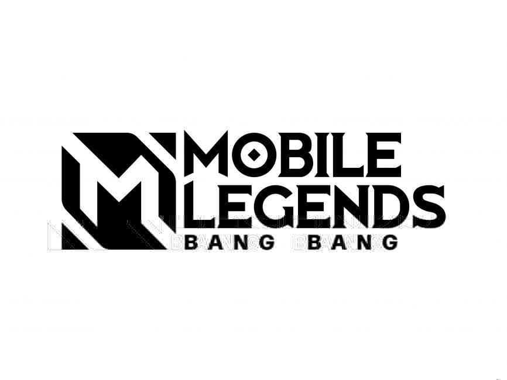
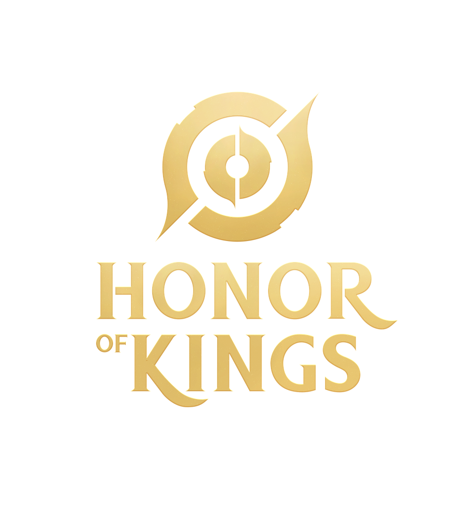
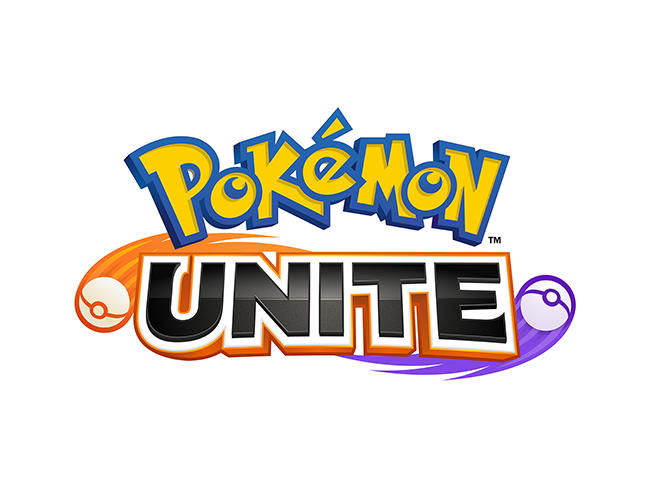
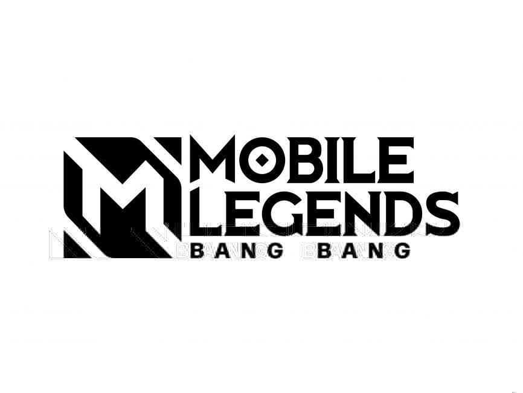
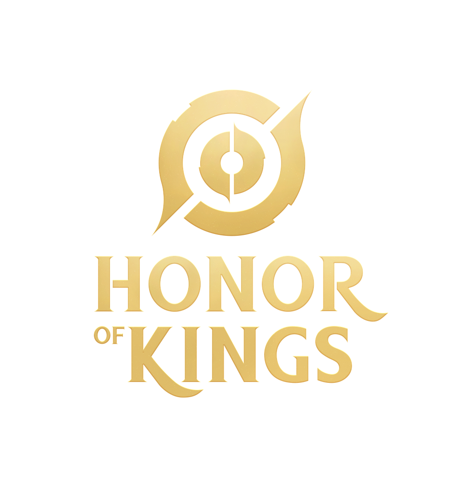
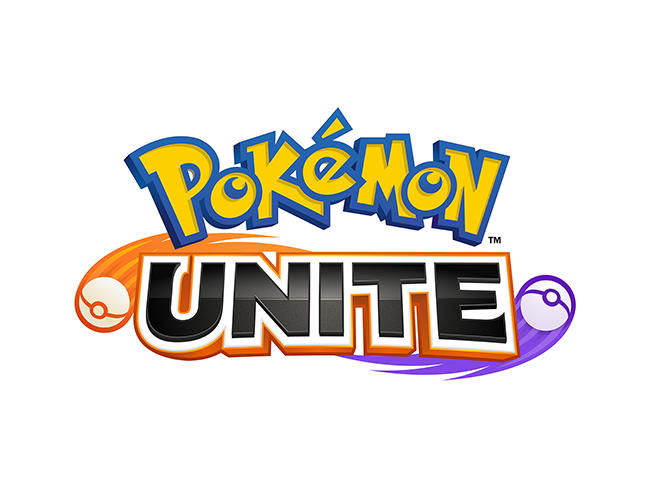

E-sport Division
Mobile Legends: Bang Bang
Free Fire
Valorant
PUBG Mobile

Honor Of Kings
Pokemon Unite

Rex Regum Qeon (RRQ) adalah organisasi esports yang didirikan di Indonesia. Organisasi ini dikenal luas dengan prestasi dan tim esports-nya yang sukses dalam berbagai kompetisi internasional. RRQ berkompetisi dalam berbagai game seperti Mobile Legends, PUBG Mobile, dan Free Fire, dan dikenal dengan tim yang berprestasi di tingkat nasional dan internasional.
Pada 2017, Rex Regum Qeon pernah bekerja sama dengan Paris Saint-Germain[4] dalam membentuk tim Mobile Legends bernama PSG RRQ yang turut serta dalam MPL Indonesia Season 3.
Mobile Legends: Bang Bang
Free Fire
Valorant
PUBG Mobile
Honor Of Kings
Pokemon Unite
RRQ telah memenangkan banyak kejuaraan di berbagai game, termasuk kejuaraan regional dan internasional. Beberapa prestasi yang diraih termasuk:
Untuk informasi lebih lanjut atau kerja sama, Anda dapat menghubungi kami melalui: